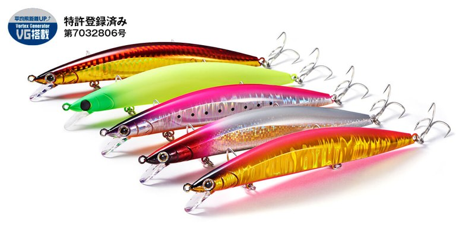
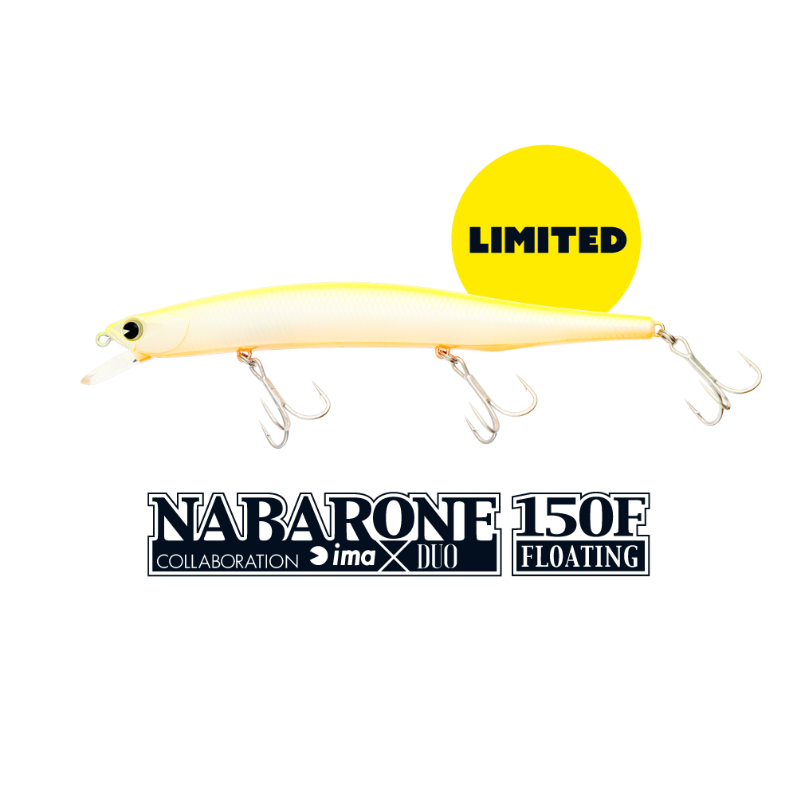

アスリート+ 16FVG モンスターエディション
（Athlete+ 16FVG Monster Edition）
アスリート16FVG（正式名：アスリート+ 16FVG モンスターエディション）は、Jackson（ジャクソン）の160mm・39gのフローティングミノーです。キャッチコピーは「この一投が、Monsterの目を覚ます。」
アスリート＋シリーズから登場した大物専用モデルで、広大なサーフや河口域に潜むモンスター級ターゲットを射程に収めるビッグフィッシュ専用ルアー。向かい風でも崩れない遠投性能と、スローで効く可変ロールアクションが最大の魅力です。サーフや河口のヒラメ・シーバス・青物・オオニベなど、大物狙いに使えます。

画像出典:Jackson公式HP
スペック
- メーカー
- Jackson（ジャクソン）
- タイプ
- フローティングミノー
- 全長
- 160mm
- 自重
- 39g
- フック・リング
- BKK Fangs-63UA #1/0
- ターゲット
- ヒラメ・シーバス・青物・オオニベなど、サーフ・河口域の大型魚
- カラー
- 全6色（グロー3色・ケイムラ2色を含む）
- 価格
- 3,135円（税込）
▼今すぐチェック

アスリート16FVGの特徴
沖のブレイクや潮目まで届く飛距離と、大物を誘うスローアクションに振り切ったビッグミノー
-
大口径タングステン重心移動とボルテックスジェネレーター搭載リップ
遠投性能を高めた大口径タングステン重心移動システムと、ボルテックスジェネレーターを搭載したリップにより、向かい風でも安定した飛行姿勢を実現。沖のブレイクラインや潮目までストレスなく届かせられる。
-
速度で変化する可変アクション＋フラットサイドの水押し
超低速域ではヨタヨタとした水押し、低速域ではロールが加わった「ヨタヨタロール」、中速域以降は安定したロールへと変化。フラットサイドボディが生む水押し波動とフラッシングが、ターゲットの捕食本能を刺激する。
-
あえて貫通ワイヤー非採用でもモンスター対応の強度
ワイヤーの重みによる重心固定を避け、スローリトリーブ時のアクションを最優先して貫通ワイヤーを非採用に。その分アイリングやボディ強度を徹底的に見直し、フックにはBKK Fangs-63UA #1/0を装備して大物とのファイトに備えている。
アスリート16FVGの飛距離とボルテックスジェネレーター
アスリート16FVGの一番の武器は飛距離です。ボディの中には大口径のタングステンを使った重心移動システムが入っていて、投げる時は重心が後ろに移り、着水すると前に戻ります。
さらにリップには「ボルテックスジェネレーター（VG）」という小さな突起があり、飛んでいる間の姿勢を安定させます。向かい風でもルアーが回りにくく、沖のブレイクラインや潮目まで届くのはこの2つのおかげです。
アスリートシリーズでVGを付けているモデルには、12FVG・14FVG・105FVG・17FSVなどがあります。16FVG モンスターエディションは、その中で一番重い39gのフローティングで、大物を狙う遠投に特化したモデルです。
アスリート16FVGの使い方
基本はスローなただ巻き。このルアーはスローリトリーブ時のアクションを最優先に設計されているため、まずは超低速〜低速でヨタヨタとした水押しやヨタヨタロールを出し、大物にじっくり口を使わせるのが基本の組み立て。
反応がない時はリトリーブ速度を中速まで上げ、安定したロールアクションでフラッシングを効かせて広範囲を探る。フローティングなので、ブレイクや潮目を通過させたあとにリトリーブを止めて浮かせる「間」を入れるのも有効です。
アスリート16FVGで狙える魚とフィールド
広大なサーフや河口域で、沖のブレイクラインや潮目に付く大型魚を狙う状況が最大の出番。
向かい風で通常のミノーでは飛距離が出ない日や、大型ベイトが入って小さいルアーでは存在感が足りない時にも強い。数よりもサイズを狙い、1本の大物に賭けたい場面で選びたい1本です。
数よりサイズを狙う場面で、大型の魚が釣れるチャンスを作れる1本です。
| 魚 | フィールド | 使いどころ |
|---|---|---|
| ヒラメ | サーフ | 沖の |
| シーバス | 河口・ |
大型ベイトが |
| 青物 | サーフ・ |
ナブラが |
| オオニベ | サーフ | 夜〜朝マズメの |
※公式の対象は「広大なサーフや河口域のモンスター級ターゲット」。魚ごとの使いどころは目安です。
ワンポイント
160mm・39gのボディとフック#1/0を扱うため、タックルは大型ミノーをフルキャストできる強めのロッドとPEラインを合わせるのがおすすめです。
巻き速度でアクションが段階的に変わるので、同じコースを速度だけ変えて通し、その日反応の良いアクションを探すと絞り込みやすくなります。
アスリート16FVGに合わせるタックル
160mm・39gを遠くまで投げるので、ルアーの最大重量が40g以上あるサーフロッドやショアジギングロッドが目安です。長さは、サーフなら10ft前後あると、ブレイクの向こうまで届かせやすくなります。
ラインはPE1.2〜2号、リーダーはフロロカーボン25〜40lbくらいが基本。青物やオオニベなど大物が掛かる場所では、太めにしておくと安心です。フックはBKK Fangs-63UA #1/0が付いているので、そのまま大物とやり取りできます。
※タックルはtsuri-boonの目安です（公式の推奨タックルは記載なし）。
アスリートシリーズの使い分け
アスリートは、ジャクソンのソルトミノーの定番シリーズ。VG付きの「アスリート+」のほか、ロングミノーや大型のシンキングペンシルまでそろっています。
| モデル | 全長／ |
タイプ | こんな |
|---|---|---|---|
| アスリート+ 16FVG モンスターエディション | 160mm／ |
フローティング | サーフ・ |
| アスリート 17FSV | 170mm／ |
フローティング | 細長い |
| アスリート+ 14FVG | 140mm／ |
フローティング | サーフ・ |
| アスリート+ 12FVG | 120mm／ |
フローティング | ベイトが |
| アスリート+ 105FVG | 105mm／ |
フローティング | 体高の |
| アスリート+ 14SVG | 140mm／ |
シンキング | フローティングでは |
| アスリート 12SSP | 120mm／ |
シンキングペンシル | 遠浅サーフの |
| アスリート 14SSP | 140mm／ |
シンキングペンシル | 貫通ワイヤー入り。 |
スペックはジャクソン公式HPの記載より。浮かせてスローに引きたいなら16FVG、もっと沈めたい・遠くの底を探りたいならシンキングのSVGやSSP、と使い分けましょう。
オススメカラー
アスリート+ 16FVG モンスターエディションは全6色展開。サーフ・河口の大物狙いでオススメのカラーを厳選して紹介します。
 APK アピールコノシロ（グロー仕様）
APK アピールコノシロ（グロー仕様）
大型ベイトのコノシロパターンにマッチ。グロー入りでローライト時にも存在感を出せる。
 GRI 銀鱗イワシ（ケイムラ仕様）
GRI 銀鱗イワシ（ケイムラ仕様）
イワシパターンの基準カラー。ケイムラで日中のアピールも補える。
 MZG マズメグリッター
MZG マズメグリッター
大物のチャンスタイムとなる朝夕マズメに投入したい1色。
 RDM レッドムーン（グロー仕様）
RDM レッドムーン（グロー仕様）
赤系＋グローで、濁り潮や暗い時間帯のシルエットアピールに。
画像出典:Jackson公式HP
▼今すぐチェック
アスリート16FVGに似ているルアー
-

アスリート+ 14SVG ジャクソン 詳細はこちら＞同じアスリート+の140mmシンキング。16FVGより深いレンジを、VGの飛距離で探りたい時に。
-

ナバロン150F ima 詳細はこちら＞150mmのフローティングミノー。50〜150cmと、16FVGより深めのレンジを引きたい時に。
-
 K2F162 T:3
タックルハウス
詳細はこちら＞
K2F162 T:3
タックルハウス
詳細はこちら＞
162mm・45gの青物用フローティングミノー。磯やサーフの青物を本気で狙うなら。
アスリート16FVGのよくある質問
Q. アスリート16FVGと、アスリート+ 16FVG モンスターエディションは同じルアー？
A. 同じルアーです。正式な名前は「アスリート+ 16FVG Monster Edition」で、「アスリート16」「アスリート16FVG」と略して呼ばれることがあります。
Q. 浮く？沈む？
A. フローティング（浮く）です。巻くのを止めると浮き上がるので、根の上や浅い場所でも根掛かりをかわしやすいです。
Q. 貫通ワイヤーが無くても大物に耐えられる？
A. スローで巻いた時の泳ぎを優先して、あえて貫通ワイヤーは入れていません。その代わりに、アイリングやボディの強度を見直していて、フックはBKK Fangs-63UA #1/0を標準で付けています。
Q. カラーは何色？夜でも使える？
A. 全6色です。アピールコノシロ・レッドムーン・トロピカルグローの3色がグロー仕様、ブラックダイヤモンド・銀鱗イワシの2色がケイムラ仕様なので、夜やマズメの暗い時間にも使いやすいです。